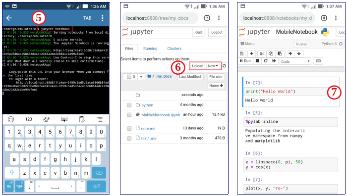

Introduction
Mercredi, 10 octobre 2018
Table of contents
Objectifs généraux en premier
Situation standard que nous rencontrons quotidiennement
Langage Python
Installation d'un environnement Python scientifique
Installation sur ordinateur
Installation sur smartphone
Toutes les notes de cours et les TP sont accessibles à partir de la page Web: https://codetunisia.github.io/CoursSimNum/
Objectifs généraux en premier
Une partie essentielle de ce cours est de vous permettre de faire de la science par des expériences numériques et de développer des projets qui vous permettent d'étudier des systèmes complexes. Le but est d'améliorer ce que nous appelons la pensée algorithmique.
Algorithme Un ensemble fini d'instructions non ambiguës qui, étant donné un ensemble de conditions initiales, peuvent être effectuées dans une séquence prescrite pour atteindre un certain but.
Situation standard que nous rencontrons quotidiennement
La situation standard que nous rencontrons presque tous les séances de cours:
- Théorie + expérience + simulation est presque la norme dans la recherche et l'industrie.
- Être capable de modéliser des systèmes complexes. Résoudre de vrais problèmes.
- Accent la compréhension des principes fondamentaux et des lois dans les sciences.
- Être capable de visualiser, présenter, discuter, interpréter et venir avec une analyse critique des résultats, et développer une attitude éthique saine pour son propre travail.
- Améliorer le raisonnement sur la méthode scientifique.
Une bonne présentation des résultats obtenus via de bons rapports scientifiques, aide à inclure tous les aspects ci-dessus.
Langage Python
Python est un langage de programmation moderne de haut niveau, orienté objet et d'usage général.
Caractéristiques générales de Python :
- Langage simple:
- facile à lire et à apprendre avec une syntaxe minimaliste.
- Langage concis et expressif:
- moins de lignes de code
- moins de bugs
- plus facile à maintenir.
- Typé dynamiquement:
- Pas besoin de définir le type des variables, les arguments ou le type des fonctions.
- La gestion automatique de la mémoire:
- Aucune nécessité d'allouer explicitement et désallouer la mémoire pour les variables et les tableaux de données. Aucun bug de fuite de mémoire.
- Interprété:
- Pas besoin de compiler le code. L'interpréteur Python lit et exécute le code python directement.
- Le principal avantage est la facilité de programmation, qui minimise le temps nécessaire pour développer, déboguer et maintenir le code.
- Langage bien conçu qui encourage les bonnes pratiques de programmation:
- Modulaire et orientée objet, permet l'encapsulation et la réutilisation de code. Il en résulte souvent un code plus transparent, plus facile à améliorer et sans bug.
- Documentation intégré avec le code.
- De nombreuses bibliothèques standards, et de nombreux packages add-on.

Installation d'un environnement Python scientifique
Installation sur ordinateur
Qu’est ce que Anaconda ?
L’installation d’un environnement Python complet peut-être une vraie galère. Déjà, il faut télécharger Python et l’installer. Par la suite, télécharger un à un les packages dont on a besoin. Parfois, le nombre de ces librairies peut-être grand.
Par ailleurs, il faut s’assurer de la compatibilité entre les versions des différentes packages qu’on a à télécharger. Bref, ce n’est pas amusant.
Finalement, Anaconda propose un outil de gestion de packages appelé conda. Ce dernier permettra de mettre à jour et installer facilement les librairies dont on aura besoin pour nos développements.
Préparer la formation: téléchargement d’Anaconda
Nous demandons à tous les étudiants de télécharger Anaconda. Pour cela, il faut télécharger un installeur à partir de https://www.anaconda.com/download/, correspondant à votre système d’exploitation (Windows, Mac OS X, Linux). Il faut choisir entre 32 bits ou 64 bits (pour la version Python 3) selon que votre système d’exploitation est 32 bits ou 64 bits.
Anaconda installe plusieurs exécutables pour développer en Python dans le répertoire anaconda/bin, sans toujours créer des raccourcis sur le bureau ou dans un menu. Nous nous occuperons au tout début de la formation de créer des raccourcis pour pouvoir lancer l'application web Jupyter notebook. Vous pouvez lancer le notebook depuis le navigateur Anaconda.
Figure 1: Interface graphique du navigateur Anaconda sur Windows

Installation sur smartphone
Pydroid 3 - IDE éducatif pour Python 3
Pydroid 3 est l'IDE éducatif Python 3 le plus simple et le plus puissant à utiliser pour Android.
Pydroid 3 fournit:
- Interpréteur Python 3.6 hors connexion: Internet n'est pas nécessaire pour exécuter des programmes Python.
- Pip package manager et un référentiel personnalisé pour les packages de roues prédéfinis pour les bibliothèques scientifiques améliorées, tels que numpy, scipy, matplotlib, scikit-learn et jupyter.
- ...
Pydroid est une application Android que vous pouvez obtenir sur Google Play: https://play.google.com/store/apps/details?id=ru.iiec.pydroid3
Les étapes suivantes, dans les figures ci-dessous, vous permettent d’utiliser le cahier Jupyter sur votre téléphone portable n’importe où et à tout moment pour vous entraîner au maximum et vous familiariser avec tous les exemples de programmation de ce cours.
1. Installer Pydroid 3 depuis Google Play: https://play.google.com/store/apps/details?id=ru.iiec.pydroid3
2. Ouvrez l'application, sur le menu cliquez sur pip et allez à l'onglet "QUICK INSTALL" pour obtenir les bibliothèques scientifiques nécessaires à ce cours.
3. Dans "QUICK INSTALL", installer les packages Jupyter , numpy et matplotlib.
Figure 2: Pydroid 3: Phase installation

4. Retournez au menu et ouvrez le terminal.
5. Sur le terminal, entrez la commande suivante:
jupyter notebook
6. Jupyter s'exécutera sur votre navigateur Web. Accédez au répertoire dans lequel vous avez des notebooks à ouvrir, à télécharger (bouton upload) ou à créer (bouton New).
7. Amusez-vous à travailler sur le notebook: créez du contenu, lancez et modifiez des exemples
Figure 3: Pydroid 3: Phase utilisation
